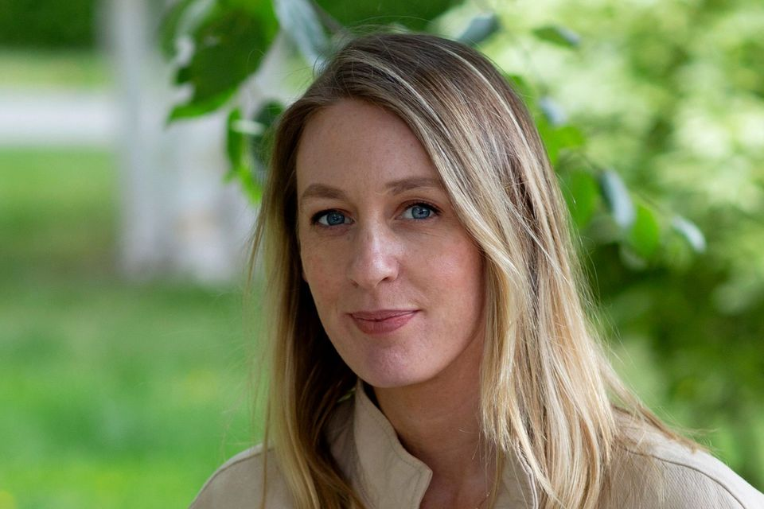
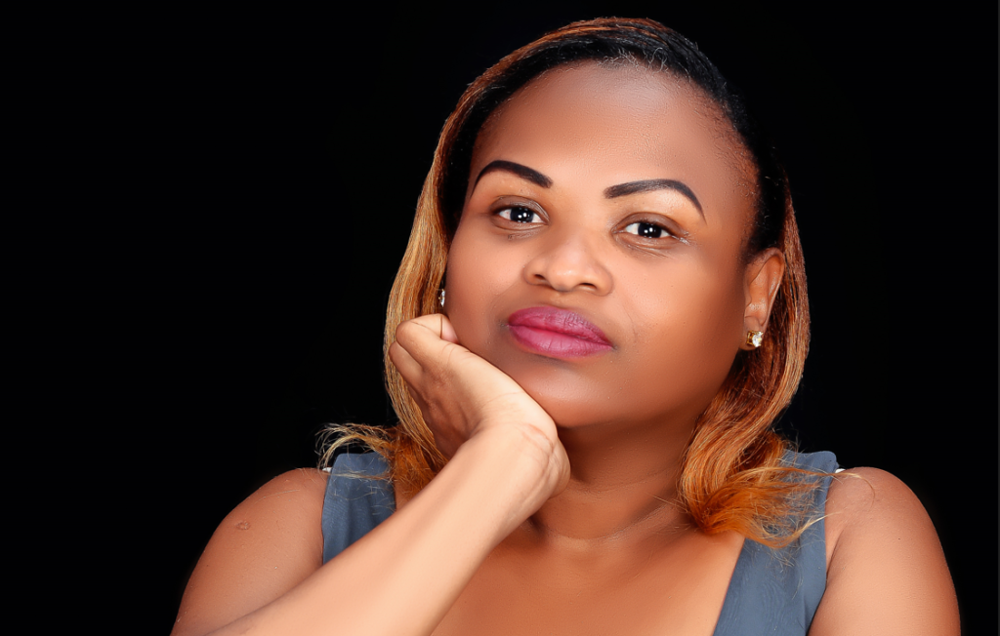

 Naomi Power is from Ireland. She has lived in Tanzania for over 10 years, For 8 years she worked in the NGO sector with an organisation that focused on providing counselling and psycho-social support. She was awarded a master's in counselling and psychotherapy from the Irish College of Humanities and Science in September 2022. As part of her Master's degree, she carried out a placement at Isamilo International School in Mwanza, offering counselling to the secondary school students. She continued to provide these services to the school on completing her placement. She has now provided nearly 2 years of counselling services at the school and she expanded her services to also include counselling to primary aged students as well

Catherine K. Mongella is a Tanzanian author, leader, and visionary in the NGO sector with over 10 years of experience in organizational development, capacity building, and solution-focused approaches. She is the current Executive Director of Earth Guardians, an organization based in Colorado, whose mission is to train and inspire youth leaders through the power of art, music, storytelling, civic engagement, and legal action.Catherine works to inspire and support impactful solutions to the critical issues we face as a global community. She is the first African woman under 40 to lead the organization and is dedicated to expanding the organization's impact in the United States, Europe, Asia, and Africa.
S